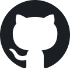
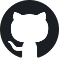

Saúl Alejandro Badillo Hernández
Hardware enthusiast, sysAdmin, Web developer
Describiria mi perfil principalmente como administrador de sistemas Linux pero trabajo tambien en desarrollo web. Mis lenguajes favoritos son C y Javascript. He trabajado con varias de las nubes más populares como AWS de Amazon, GCP de Google, Azure de Microsoft y Open Cloud de Huawei, donde he alojado paginas web, creado instancias de bases de datos y trabajado con su modulos de IoT.
Idiomas:
- Español nativo.
- Inglés avanzado.
- Aleman medio.
Lenguajes de programación que sé:
- C/C++
- Javascript
- Python
- Java
- Bash
Lenguajes de etiquetado, programas y otras tecnologias con las que he trabajado:
- HTML & CSS
- Markdown
- MySql
- Git
- Node.js
- Cisco Packet Tracer
- 3DS Max
- Blender
- Unity
- Arduino
- Raspberry Pi
- KiCad
- Eagle
Experiencia
- GDG UNAM Leader in C.U
- Organizar un evento de Hacktoberfest.
- Organizar e impartir un curso de Git.
- Ayudar a organizar meetups.
- Participar como ponente en un meetup del IoT Core de google cloud platform.
- Manejar redes sociales.
- Miembro del Taller de Robotica Abierta de la UNAM.
- Aprendido ROS.
- Empezar a usar el Robot tortuga de robotis.
- Probado varios protocolos de comunicación para el control de robots.
- Programación de un prototipo de robot que camina en arena.
- Impartido Un curso de IoT para alumnos colombianos.
Soy lider de la comunidad GDG UNAM en C.U donde he sido encargado de:
Pertenezco a la comunidad del taller de robotica abierta donde he:

 

Contacto: bh365@protonmail.com